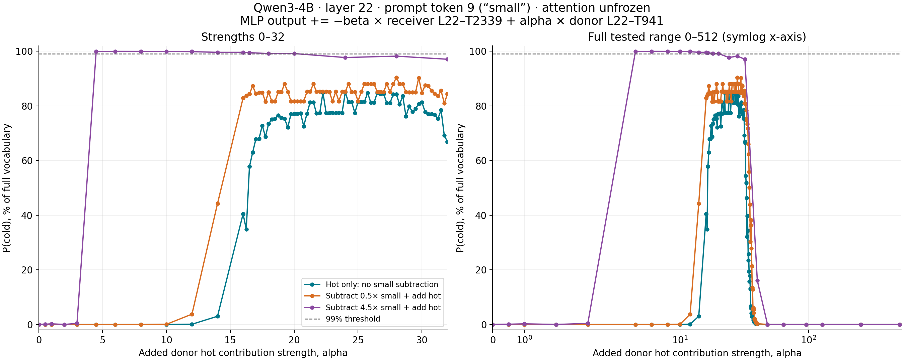
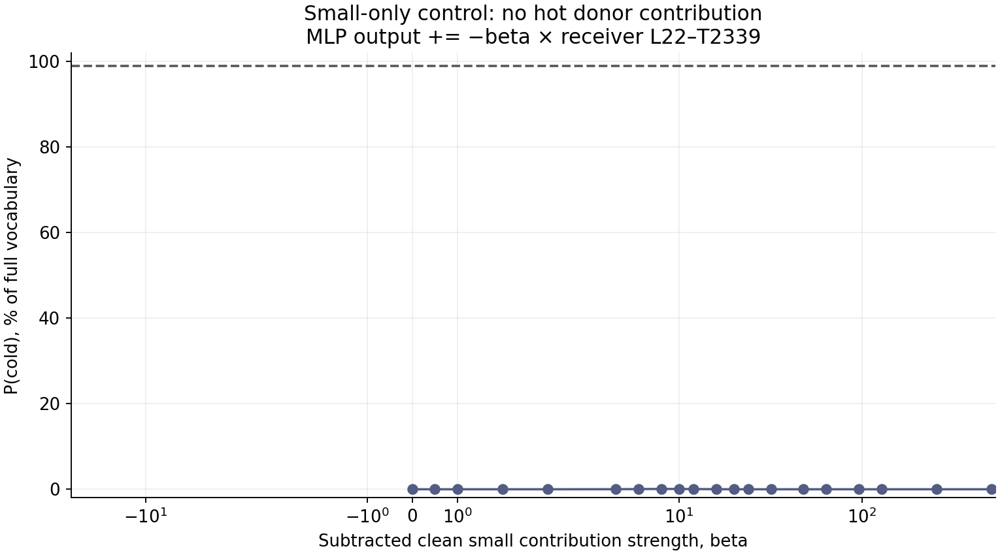

largeEOS reached; initial logits match sweep exactly.
2026-10-14 · Qwen3-4B · layer 22 · token 9 · unfrozen attention
Hot-only steering makes the model answer “cold”
One hot-associated MOLT is sufficient to flip the greedy answer at higher strength. Lowercase P(cold) peaks below 99% in the tested range; capitalization accounts for most of the remaining probability. This tests whether the original two-feature result requires both edits at every strength. P(cold) is the full-vocabulary next-token probability of lowercase cold (token 87072).
Receiver:
What is the opposite of "small"? Reply with only the word, nothing else.Donor:
What is the opposite of "hot"? Reply with only the word, nothing else.
The intervention writes at receiver “small”, token 9. The donor vector comes from “hot”, also token 9. Indices include the chat template and start at zero; readout is token 28.
0<|im_start|>1user2
3What4 is5 the6 opposite7 of8 "9small10"?11 Reply12 with13 only14 the15 word16,17 nothing18 else19.20<|im_end|>21
22<|im_start|>23assistant24
25<think>26
27</think>28
Measured strength curves

| Method | Best tested P(cold) | At hot strength | Lowest tested 99% strength |
|---|---|---|---|
| Hot only: no small subtraction | 84.9391% | 24× | Not reached through 512× |
| Subtract 0.5× small + add hot | 90.3988% | 28× | Not reached through 512× |
| Subtract 4.5× small + add hot | 99.9564% | 6× | 4.125× |
Original pair reference: subtract 4.5× small and add 4.5× hot gives 99.8653%. The added hot-only and weak-small curves include a finer exploratory 0.25× scan from 16× to 40×, chosen after the initial coarse sweep. Values at 4.5× alone can be tiny without being exactly zero. The added strength and small subtraction are independently varied here.
Precisely what changes
MLP_receiver[22, 9, :] += −beta × C_small(clean receiver)
+alpha × C_hot(clean donor)
C_f(x) = gate_f(z) × ((z @ V_f) @ U_f) × output_std
z = (prenorm residual x − input_mean) / input_std
L22–T2339: Small-Size Adjectives and Idiomatic Phrases; rank 32. L22–T941: Thermal State and Heat Action Gate; rank 64. These are dashboard gate labels, not proof that their outputs encode only those concepts.
The full gated low-rank output is patched. The source input, gate, and vector are computed once on each clean source prompt. We do not multiply x, replace a gate, or replace the MLP. The native MLP remains, and a fixed vector is added before residual addition. beta = 0.5 subtracts half the estimated clean small contribution; it does not set the gate to −0.5.
The model runs in BF16; MOLT source math is FP32. The FP32 delta is rounded to BF16, then added to native BF16 output. Actual writes, fixed sources, and lossless full-vocabulary BF16 logit bit patterns are saved for every condition.
Single small-feature control

Best tested small-only P(cold): 0.0746404%, at beta = 8.
Capitalization diagnostic
The primary target above is lowercase cold. At the best hot-only point, capitalized Cold contributes 14.7602%; the combined lowercase/capitalized cold probability is 99.6993%. At the best weak-small point, the combined probability is 99.9267%. These diagnostics do not replace the lowercase metric.
Greedy continuations
Only the original prompt token 9 is directly edited. Later attention and all output-token computation remain free. Generation recomputes the full prefix, reapplies the same prompt-position edit, and stops at EOS or 24 generated tokens.
coldEOS reached; initial logits match sweep exactly.
largeEOS reached; initial logits match sweep exactly.
coldEOS reached; initial logits match sweep exactly.
Opposite of "opposite" is "similar".EOS reached; initial logits match sweep exactly.
coldEOS reached; initial logits match sweep exactly.
coldEOS reached; initial logits match sweep exactly.
Threshold resolution and limits
- {"beta": 0, "reached_99": false, "largest_tested_alpha": 512.0}
- {"beta": 0.5, "reached_99": false, "largest_tested_alpha": 512.0}
- {"beta": 4.5, "reached_99": true, "coarse_bracket": [3.0, 4.5], "lower_alpha": 4.119140625, "lower_P_cold": 0.9853897094726562, "upper_alpha": 4.125, "upper_P_cold": 0.9908698201179504, "interpretation": "First observed coarse-grid crossing, locally refined; not a proven global minimum."}
One receiver/donor prompt pair; strength sweep, not broad task generalization. High-gain answer steering does not establish semantic replacement or feature selectivity. Local threshold refinement is not a proof of global minimum. Increasing strength is not uniformly beneficial: at 512× the greedy answer becomes “Opposite of "opposite" is "similar".” Probability versus strength may be nonmonotonic; a bounded sweep cannot establish impossibility at all strengths.
Verification and provenance
303 recorded conditions. Every batch includes unmodified receiver rows checked bitwise against baseline. Repeat and restoration checks pass. Native attention methods are unchanged; saved attention tensors are identical through layer 22 and differ downstream. An independent CPU audit recomputes source contribution math, full-vocabulary probabilities and BF16 writes.
Base revision: 1cfa9a7208912126459214e8b04321603b3df60c
MOLT revision: eed10292a96521837f5d65b36fdfa3bf5bea0037
Selected asset SHA256: cff6543981e529a6185ba456031cd42e3c5f7dc9570d66bbdd3a57de80d5070e
Protocol · CPU audit · CSV · Summary · Raw results · Continuations · Lossless logits · Direct writes · Fixed sources · Initial sweep archive · Figure PDF · Experiment source · Reproduction
Every recorded condition
| Condition | Hot alpha | Small beta | P(cold) | Top token | Actual delta norm |
|---|---|---|---|---|---|
| clean_receiver | 0 | 0 | 2.45892e-10% | large | 0.0000 |
| clean_donor | 0 | 0 | 97.068% | cold | 0.0000 |
| coarse_a0_b0 | 0 | 0 | 2.45892e-10% | large | 0.0000 |
| coarse_a0.5_b0 | 0.5 | 0 | 3.22051e-10% | large | 4.7240 |
| coarse_a1_b0 | 1 | 0 | 4.19609e-10% | large | 9.4464 |
| coarse_a2_b0 | 2 | 0 | 1.29096e-09% | large | 18.8921 |
| coarse_a3_b0 | 3 | 0 | 1.2829e-08% | large | 28.3423 |
| coarse_a4.5_b0 | 4.5 | 0 | 2.5177e-07% | large | 42.5077 |
| coarse_a6_b0 | 6 | 0 | 3.28701e-06% | big | 56.6900 |
| coarse_a8_b0 | 8 | 0 | 9.6208e-05% | big | 75.5735 |
| coarse_a10_b0 | 10 | 0 | 0.00286356% | big | 94.4900 |
| coarse_a12_b0 | 12 | 0 | 0.087822% | big | 113.3769 |
| coarse_a14_b0 | 14 | 0 | 3.01051% | big | 132.2434 |
| coarse_a16_b0 | 16 | 0 | 40.4587% | cold | 151.1498 |
| coarse_a16.5_b0 | 16.5 | 0 | 57.7841% | cold | 155.8745 |
| coarse_a18_b0 | 18 | 0 | 73.4383% | cold | 170.0529 |
| coarse_a20_b0 | 20 | 0 | 77.1182% | cold | 188.9675 |
| coarse_a24_b0 | 24 | 0 | 84.9391% | cold | 226.7946 |
| coarse_a28_b0 | 28 | 0 | 84.2207% | cold | 264.5149 |
| coarse_a32_b0 | 32 | 0 | 66.8572% | cold | 302.3326 |
| coarse_a40_b0 | 40 | 0 | 0.190652% | big | 377.9956 |
| coarse_a48_b0 | 48 | 0 | 0.000307705% | Opp | 453.6013 |
| coarse_a64_b0 | 64 | 0 | 1.2602e-06% | Opp | 604.5869 |
| coarse_a96_b0 | 96 | 0 | 1.32868e-07% | Opp | 906.8887 |
| coarse_a128_b0 | 128 | 0 | 2.45818e-08% | Opp | 1208.9629 |
| coarse_a256_b0 | 256 | 0 | 6.54324e-09% | Opp | 2418.3640 |
| coarse_a512_b0 | 512 | 0 | 4.97077e-09% | Opp | 4836.6099 |
| coarse_a0_b0.5 | 0 | 0.5 | 1.99245e-10% | large | 5.6508 |
| coarse_a0.5_b0.5 | 0.5 | 0.5 | 3.71227e-10% | large | 7.2570 |
| coarse_a1_b0.5 | 1 | 0.5 | 5.39002e-10% | large | 10.8646 |
| coarse_a2_b0.5 | 2 | 0.5 | 2.13703e-09% | large | 19.5641 |
| coarse_a3_b0.5 | 3 | 0.5 | 3.05926e-08% | large | 28.7306 |
| coarse_a4.5_b0.5 | 4.5 | 0.5 | 8.38379e-07% | large | 42.7202 |
| coarse_a6_b0.5 | 6 | 0.5 | 2.3963e-05% | big | 56.7990 |
| coarse_a8_b0.5 | 8 | 0.5 | 0.00151619% | big | 75.6136 |
| coarse_a10_b0.5 | 10 | 0.5 | 0.062124% | big | 94.4746 |
| coarse_a12_b0.5 | 12 | 0.5 | 3.78255% | big | 113.3222 |
| coarse_a14_b0.5 | 14 | 0.5 | 44.2751% | cold | 132.2175 |
| coarse_a16_b0.5 | 16 | 0.5 | 82.8556% | cold | 151.1058 |
| coarse_a16.5_b0.5 | 16.5 | 0.5 | 84.4026% | cold | 155.8385 |
| coarse_a18_b0.5 | 18 | 0.5 | 84.9888% | cold | 169.9723 |
| coarse_a20_b0.5 | 20 | 0.5 | 81.7245% | cold | 188.8512 |
| coarse_a24_b0.5 | 24 | 0.5 | 85.1762% | cold | 226.6640 |
| coarse_a28_b0.5 | 28 | 0.5 | 90.3988% | cold | 264.4505 |
| coarse_a32_b0.5 | 32 | 0.5 | 84.3404% | cold | 302.2350 |
| coarse_a40_b0.5 | 40 | 0.5 | 0.294112% | big | 377.8512 |
| coarse_a48_b0.5 | 48 | 0.5 | 0.000282399% | Opp | 453.4450 |
| coarse_a64_b0.5 | 64 | 0.5 | 1.72045e-06% | Opp | 604.5039 |
| coarse_a96_b0.5 | 96 | 0.5 | 1.03481e-07% | Opp | 906.6674 |
| coarse_a128_b0.5 | 128 | 0.5 | 3.80701e-08% | Opp | 1209.2322 |
| coarse_a256_b0.5 | 256 | 0.5 | 7.49705e-09% | Opp | 2418.4883 |
| coarse_a512_b0.5 | 512 | 0.5 | 4.01261e-09% | Opp | 4836.7412 |
| coarse_a0_b4.5 | 0 | 4.5 | 0.015891% | small | 50.8425 |
| coarse_a0.5_b4.5 | 0.5 | 4.5 | 0.0906834% | small | 50.9151 |
| coarse_a1_b4.5 | 1 | 4.5 | 0.244728% | low | 51.4463 |
| coarse_a2_b4.5 | 2 | 4.5 | 0.00514398% | low | 53.7252 |
| coarse_a3_b4.5 | 3 | 4.5 | 0.406995% | low | 57.4848 |
| coarse_a4.5_b4.5 | 4.5 | 4.5 | 99.8653% | cold | 65.3121 |
| coarse_a6_b4.5 | 6 | 4.5 | 99.9564% | cold | 75.0417 |
| coarse_a8_b4.5 | 8 | 4.5 | 99.9442% | cold | 89.8578 |
| coarse_a10_b4.5 | 10 | 4.5 | 99.9084% | cold | 105.9776 |
| coarse_a12_b4.5 | 12 | 4.5 | 99.8493% | cold | 122.9068 |
| coarse_a14_b4.5 | 14 | 4.5 | 99.5921% | cold | 140.2985 |
| coarse_a16_b4.5 | 16 | 4.5 | 99.5918% | cold | 158.0753 |
| coarse_a16.5_b4.5 | 16.5 | 4.5 | 99.4767% | cold | 162.5573 |
| coarse_a18_b4.5 | 18 | 4.5 | 99.1407% | cold | 176.0722 |
| coarse_a20_b4.5 | 20 | 4.5 | 99.1405% | cold | 194.2795 |
| coarse_a24_b4.5 | 24 | 4.5 | 97.6994% | cold | 230.9598 |
| coarse_a28_b4.5 | 28 | 4.5 | 98.1991% | cold | 267.9057 |
| coarse_a32_b4.5 | 32 | 4.5 | 97.065% | cold | 305.1719 |
| coarse_a40_b4.5 | 40 | 4.5 | 16.0637% | Opp | 379.8807 |
| coarse_a48_b4.5 | 48 | 4.5 | 0.000286226% | Opp | 454.9179 |
| coarse_a64_b4.5 | 64 | 4.5 | 1.17126e-06% | Opp | 605.2672 |
| coarse_a96_b4.5 | 96 | 4.5 | 1.39861e-07% | Opp | 906.6801 |
| coarse_a128_b4.5 | 128 | 4.5 | 3.15638e-08% | Opp | 1208.4939 |
| coarse_a256_b4.5 | 256 | 4.5 | 7.97975e-09% | Opp | 2417.6648 |
| coarse_a512_b4.5 | 512 | 4.5 | 4.22441e-09% | Opp | 4835.3169 |
| small_only_a0_b0 | 0 | 0 | 2.45892e-10% | large | 0.0000 |
| small_only_a0_b0.5 | 0 | 0.5 | 1.99245e-10% | large | 5.6508 |
| small_only_a0_b1 | 0 | 1 | 2.59353e-10% | large | 11.2988 |
| small_only_a0_b2 | 0 | 2 | 6.37549e-10% | large | 22.5978 |
| small_only_a0_b3 | 0 | 3 | 2.14257e-08% | large | 33.8892 |
| small_only_a0_b4.5 | 0 | 4.5 | 0.015891% | small | 50.8425 |
| small_only_a0_b6 | 0 | 6 | 0.0511519% | bad | 67.7926 |
| small_only_a0_b8 | 0 | 8 | 0.0746404% | bad | 90.3991 |
| small_only_a0_b10 | 0 | 10 | 0.069953% | bad | 112.9918 |
| small_only_a0_b12 | 0 | 12 | 0.0511771% | bad | 135.5719 |
| small_only_a0_b16 | 0 | 16 | 0.0220857% | bad | 180.7825 |
| small_only_a0_b20 | 0 | 20 | 5.58311e-05% | op | 225.9913 |
| small_only_a0_b24 | 0 | 24 | 3.48589e-07% | Opp | 271.1506 |
| small_only_a0_b32 | 0 | 32 | 6.61844e-09% | Opp | 361.5602 |
| small_only_a0_b48 | 0 | 48 | 2.28433e-09% | Opp | 542.2523 |
| small_only_a0_b64 | 0 | 64 | 2.7548e-09% | Opp | 723.1802 |
| small_only_a0_b96 | 0 | 96 | 4.27057e-09% | Opp | 1084.7150 |
| small_only_a0_b128 | 0 | 128 | 3.28961e-09% | Opp | 1446.3483 |
| small_only_a0_b256 | 0 | 256 | 3.09047e-09% | Opp | 2892.2869 |
| small_only_a0_b512 | 0 | 512 | 3.54096e-09% | Opp | 5786.5430 |
| peak_scan_a16_b0 | 16 | 0 | 40.4587% | cold | 151.1498 |
| peak_scan_a16.25_b0 | 16.25 | 0 | 34.8553% | big | 153.5388 |
| peak_scan_a16.5_b0 | 16.5 | 0 | 57.7841% | cold | 155.8745 |
| peak_scan_a16.75_b0 | 16.75 | 0 | 63.0053% | cold | 158.2440 |
| peak_scan_a17_b0 | 17 | 0 | 67.8113% | cold | 160.6072 |
| peak_scan_a17.25_b0 | 17.25 | 0 | 68.0106% | cold | 162.9585 |
| peak_scan_a17.5_b0 | 17.5 | 0 | 72.8107% | cold | 165.3215 |
| peak_scan_a17.75_b0 | 17.75 | 0 | 68.7469% | cold | 167.6798 |
| peak_scan_a18_b0 | 18 | 0 | 73.4383% | cold | 170.0529 |
| peak_scan_a18.25_b0 | 18.25 | 0 | 75.1117% | cold | 172.4044 |
| peak_scan_a18.5_b0 | 18.5 | 0 | 75.3686% | cold | 174.7744 |
| peak_scan_a18.75_b0 | 18.75 | 0 | 76.5774% | cold | 177.1257 |
| peak_scan_a19_b0 | 19 | 0 | 75.6429% | cold | 179.4746 |
| peak_scan_a19.25_b0 | 19.25 | 0 | 75.3372% | cold | 181.8533 |
| peak_scan_a19.5_b0 | 19.5 | 0 | 72.1039% | cold | 184.2456 |
| peak_scan_a19.75_b0 | 19.75 | 0 | 77.038% | cold | 186.5821 |
| peak_scan_a20_b0 | 20 | 0 | 77.1182% | cold | 188.9675 |
| peak_scan_a20.25_b0 | 20.25 | 0 | 77.1286% | cold | 191.3282 |
| peak_scan_a20.5_b0 | 20.5 | 0 | 77.2592% | cold | 193.6689 |
| peak_scan_a20.75_b0 | 20.75 | 0 | 72.5636% | cold | 196.0417 |
| peak_scan_a21_b0 | 21 | 0 | 77.1973% | cold | 198.3935 |
| peak_scan_a21.25_b0 | 21.25 | 0 | 81.3623% | cold | 200.7844 |
| peak_scan_a21.5_b0 | 21.5 | 0 | 81.3569% | cold | 203.1133 |
| peak_scan_a21.75_b0 | 21.75 | 0 | 77.2595% | cold | 205.5248 |
| peak_scan_a22_b0 | 22 | 0 | 77.4095% | cold | 207.8494 |
| peak_scan_a22.25_b0 | 22.25 | 0 | 84.9014% | cold | 210.2108 |
| peak_scan_a22.5_b0 | 22.5 | 0 | 77.4463% | cold | 212.5905 |
| peak_scan_a22.75_b0 | 22.75 | 0 | 77.3725% | cold | 214.9280 |
| peak_scan_a23_b0 | 23 | 0 | 77.4815% | cold | 217.2897 |
| peak_scan_a23.25_b0 | 23.25 | 0 | 77.4096% | cold | 219.6734 |
| peak_scan_a23.5_b0 | 23.5 | 0 | 77.5077% | cold | 222.0192 |
| peak_scan_a23.75_b0 | 23.75 | 0 | 77.45% | cold | 224.3822 |
| peak_scan_a24_b0 | 24 | 0 | 84.9391% | cold | 226.7946 |
| peak_scan_a24.25_b0 | 24.25 | 0 | 81.4111% | cold | 229.1164 |
| peak_scan_a24.5_b0 | 24.5 | 0 | 81.4553% | cold | 231.4836 |
| peak_scan_a24.75_b0 | 24.75 | 0 | 77.447% | cold | 233.8253 |
| peak_scan_a25_b0 | 25 | 0 | 81.4543% | cold | 236.2091 |
| peak_scan_a25.25_b0 | 25.25 | 0 | 81.455% | cold | 238.5982 |
| peak_scan_a25.5_b0 | 25.5 | 0 | 81.5468% | cold | 240.9286 |
| peak_scan_a25.75_b0 | 25.75 | 0 | 84.7214% | cold | 243.3018 |
| peak_scan_a26_b0 | 26 | 0 | 81.198% | cold | 245.6593 |
| peak_scan_a26.25_b0 | 26.25 | 0 | 81.1319% | cold | 248.0317 |
| peak_scan_a26.5_b0 | 26.5 | 0 | 84.7292% | cold | 250.3590 |
| peak_scan_a26.75_b0 | 26.75 | 0 | 84.4289% | cold | 252.7436 |
| peak_scan_a27_b0 | 27 | 0 | 84.4344% | cold | 255.0498 |
| peak_scan_a27.25_b0 | 27.25 | 0 | 81.0435% | cold | 257.4756 |
| peak_scan_a27.5_b0 | 27.5 | 0 | 81.0493% | cold | 259.8642 |
| peak_scan_a27.75_b0 | 27.75 | 0 | 84.2216% | cold | 262.1913 |
| peak_scan_a28_b0 | 28 | 0 | 84.2207% | cold | 264.5149 |
| peak_scan_a28.25_b0 | 28.25 | 0 | 80.5747% | cold | 266.8756 |
| peak_scan_a28.5_b0 | 28.5 | 0 | 83.6035% | cold | 269.3056 |
| peak_scan_a28.75_b0 | 28.75 | 0 | 76.1681% | cold | 271.6254 |
| peak_scan_a29_b0 | 29 | 0 | 79.8655% | cold | 274.0029 |
| peak_scan_a29.25_b0 | 29.25 | 0 | 77.8622% | cold | 276.3552 |
| peak_scan_a29.5_b0 | 29.5 | 0 | 79.0108% | cold | 278.7206 |
| peak_scan_a29.75_b0 | 29.75 | 0 | 80.7524% | cold | 281.0976 |
| peak_scan_a30_b0 | 30 | 0 | 81.2911% | cold | 283.4377 |
| peak_scan_a30.25_b0 | 30.25 | 0 | 77.81% | cold | 285.8387 |
| peak_scan_a30.5_b0 | 30.5 | 0 | 76.9963% | cold | 288.1473 |
| peak_scan_a30.75_b0 | 30.75 | 0 | 76.9931% | cold | 290.5323 |
| peak_scan_a31_b0 | 31 | 0 | 76.8018% | cold | 292.8830 |
| peak_scan_a31.25_b0 | 31.25 | 0 | 75.3229% | cold | 295.2166 |
| peak_scan_a31.5_b0 | 31.5 | 0 | 78.4446% | cold | 297.5712 |
| peak_scan_a31.75_b0 | 31.75 | 0 | 69.1556% | cold | 299.9631 |
| peak_scan_a32_b0 | 32 | 0 | 66.8572% | cold | 302.3326 |
| peak_scan_a32.25_b0 | 32.25 | 0 | 66.4247% | cold | 304.6926 |
| peak_scan_a32.5_b0 | 32.5 | 0 | 54.3846% | cold | 307.1059 |
| peak_scan_a32.75_b0 | 32.75 | 0 | 51.871% | cold | 309.4715 |
| peak_scan_a33_b0 | 33 | 0 | 46.3628% | cold | 311.8097 |
| peak_scan_a33.25_b0 | 33.25 | 0 | 32.1577% | big | 314.1686 |
| peak_scan_a33.5_b0 | 33.5 | 0 | 39.7716% | big | 316.5221 |
| peak_scan_a33.75_b0 | 33.75 | 0 | 34.3076% | big | 318.9046 |
| peak_scan_a34_b0 | 34 | 0 | 23.4809% | big | 321.2353 |
| peak_scan_a34.25_b0 | 34.25 | 0 | 25.7422% | big | 323.5731 |
| peak_scan_a34.5_b0 | 34.5 | 0 | 19.3713% | big | 325.9575 |
| peak_scan_a34.75_b0 | 34.75 | 0 | 15.7416% | big | 328.2811 |
| peak_scan_a35_b0 | 35 | 0 | 17.8172% | big | 330.6777 |
| peak_scan_a35.25_b0 | 35.25 | 0 | 13.1154% | big | 333.0671 |
| peak_scan_a35.5_b0 | 35.5 | 0 | 6.75512% | big | 335.4121 |
| peak_scan_a35.75_b0 | 35.75 | 0 | 6.01393% | big | 337.8052 |
| peak_scan_a36_b0 | 36 | 0 | 4.1847% | big | 340.1569 |
| peak_scan_a36.25_b0 | 36.25 | 0 | 2.88737% | big | 342.5115 |
| peak_scan_a36.5_b0 | 36.5 | 0 | 3.35441% | big | 344.8670 |
| peak_scan_a36.75_b0 | 36.75 | 0 | 4.64365% | big | 347.2387 |
| peak_scan_a37_b0 | 37 | 0 | 3.30485% | big | 349.6121 |
| peak_scan_a37.25_b0 | 37.25 | 0 | 1.65553% | big | 351.9502 |
| peak_scan_a37.5_b0 | 37.5 | 0 | 1.68982% | big | 354.3156 |
| peak_scan_a37.75_b0 | 37.75 | 0 | 1.00211% | big | 356.6629 |
| peak_scan_a38_b0 | 38 | 0 | 0.854774% | big | 358.9760 |
| peak_scan_a38.25_b0 | 38.25 | 0 | 0.720896% | big | 361.3936 |
| peak_scan_a38.5_b0 | 38.5 | 0 | 0.497967% | big | 363.7606 |
| peak_scan_a38.75_b0 | 38.75 | 0 | 0.296921% | big | 366.1295 |
| peak_scan_a39_b0 | 39 | 0 | 0.216171% | big | 368.4875 |
| peak_scan_a39.25_b0 | 39.25 | 0 | 0.207393% | big | 370.8885 |
| peak_scan_a39.5_b0 | 39.5 | 0 | 0.178244% | big | 373.2544 |
| peak_scan_a39.75_b0 | 39.75 | 0 | 0.191329% | big | 375.5541 |
| peak_scan_a40_b0 | 40 | 0 | 0.190652% | big | 377.9956 |
| peak_scan_a16_b0.5 | 16 | 0.5 | 82.8556% | cold | 151.1058 |
| peak_scan_a16.25_b0.5 | 16.25 | 0.5 | 83.732% | cold | 153.4659 |
| peak_scan_a16.5_b0.5 | 16.5 | 0.5 | 84.4026% | cold | 155.8385 |
| peak_scan_a16.75_b0.5 | 16.75 | 0.5 | 87.2591% | cold | 158.1684 |
| peak_scan_a17_b0.5 | 17 | 0.5 | 84.5106% | cold | 160.5532 |
| peak_scan_a17.25_b0.5 | 17.25 | 0.5 | 84.8648% | cold | 162.9145 |
| peak_scan_a17.5_b0.5 | 17.5 | 0.5 | 84.9028% | cold | 165.2403 |
| peak_scan_a17.75_b0.5 | 17.75 | 0.5 | 81.566% | cold | 167.6106 |
| peak_scan_a18_b0.5 | 18 | 0.5 | 84.9888% | cold | 169.9723 |
| peak_scan_a18.25_b0.5 | 18.25 | 0.5 | 81.6366% | cold | 172.3335 |
| peak_scan_a18.5_b0.5 | 18.5 | 0.5 | 81.6229% | cold | 174.7112 |
| peak_scan_a18.75_b0.5 | 18.75 | 0.5 | 85.1335% | cold | 177.0539 |
| peak_scan_a19_b0.5 | 19 | 0.5 | 85.117% | cold | 179.4133 |
| peak_scan_a19.25_b0.5 | 19.25 | 0.5 | 88.0219% | cold | 181.7753 |
| peak_scan_a19.5_b0.5 | 19.5 | 0.5 | 85.1513% | cold | 184.1300 |
| peak_scan_a19.75_b0.5 | 19.75 | 0.5 | 81.7202% | cold | 186.5132 |
| peak_scan_a20_b0.5 | 20 | 0.5 | 81.7245% | cold | 188.8512 |
| peak_scan_a20.25_b0.5 | 20.25 | 0.5 | 81.7272% | cold | 191.2246 |
| peak_scan_a20.5_b0.5 | 20.5 | 0.5 | 81.7281% | cold | 193.6056 |
| peak_scan_a20.75_b0.5 | 20.75 | 0.5 | 81.7273% | cold | 195.9498 |
| peak_scan_a21_b0.5 | 21 | 0.5 | 85.1692% | cold | 198.3272 |
| peak_scan_a21.25_b0.5 | 21.25 | 0.5 | 85.1715% | cold | 200.6858 |
| peak_scan_a21.5_b0.5 | 21.5 | 0.5 | 88.0528% | cold | 203.0097 |
| peak_scan_a21.75_b0.5 | 21.75 | 0.5 | 85.1745% | cold | 205.3818 |
| peak_scan_a22_b0.5 | 22 | 0.5 | 85.1692% | cold | 207.7413 |
| peak_scan_a22.25_b0.5 | 22.25 | 0.5 | 85.178% | cold | 210.0950 |
| peak_scan_a22.5_b0.5 | 22.5 | 0.5 | 85.1698% | cold | 212.4967 |
| peak_scan_a22.75_b0.5 | 22.75 | 0.5 | 85.167% | cold | 214.8292 |
| peak_scan_a23_b0.5 | 23 | 0.5 | 81.7353% | cold | 217.2257 |
| peak_scan_a23.25_b0.5 | 23.25 | 0.5 | 85.1698% | cold | 219.5487 |
| peak_scan_a23.5_b0.5 | 23.5 | 0.5 | 81.7345% | cold | 221.9239 |
| peak_scan_a23.75_b0.5 | 23.75 | 0.5 | 85.1699% | cold | 224.2848 |
| peak_scan_a24_b0.5 | 24 | 0.5 | 85.1762% | cold | 226.6640 |
| peak_scan_a24.25_b0.5 | 24.25 | 0.5 | 88.0506% | cold | 229.0314 |
| peak_scan_a24.5_b0.5 | 24.5 | 0.5 | 85.1665% | cold | 231.4262 |
| peak_scan_a24.75_b0.5 | 24.75 | 0.5 | 85.1671% | cold | 233.7014 |
| peak_scan_a25_b0.5 | 25 | 0.5 | 81.7309% | cold | 236.0809 |
| peak_scan_a25.25_b0.5 | 25.25 | 0.5 | 85.169% | cold | 238.4903 |
| peak_scan_a25.5_b0.5 | 25.5 | 0.5 | 88.0553% | cold | 240.8370 |
| peak_scan_a25.75_b0.5 | 25.75 | 0.5 | 88.0503% | cold | 243.2039 |
| peak_scan_a26_b0.5 | 26 | 0.5 | 88.0499% | cold | 245.5952 |
| peak_scan_a26.25_b0.5 | 26.25 | 0.5 | 88.0387% | cold | 247.9096 |
| peak_scan_a26.5_b0.5 | 26.5 | 0.5 | 85.147% | cold | 250.2556 |
| peak_scan_a26.75_b0.5 | 26.75 | 0.5 | 85.1415% | cold | 252.6654 |
| peak_scan_a27_b0.5 | 27 | 0.5 | 85.1473% | cold | 254.9896 |
| peak_scan_a27.25_b0.5 | 27.25 | 0.5 | 88.0161% | cold | 257.4077 |
| peak_scan_a27.5_b0.5 | 27.5 | 0.5 | 85.1408% | cold | 259.7252 |
| peak_scan_a27.75_b0.5 | 27.75 | 0.5 | 88.0167% | cold | 262.1108 |
| peak_scan_a28_b0.5 | 28 | 0.5 | 90.3988% | cold | 264.4505 |
| peak_scan_a28.25_b0.5 | 28.25 | 0.5 | 88.0087% | cold | 266.7801 |
| peak_scan_a28.5_b0.5 | 28.5 | 0.5 | 87.998% | cold | 269.1123 |
| peak_scan_a28.75_b0.5 | 28.75 | 0.5 | 85.0583% | cold | 271.5727 |
| peak_scan_a29_b0.5 | 29 | 0.5 | 85.0184% | cold | 273.9257 |
| peak_scan_a29.25_b0.5 | 29.25 | 0.5 | 84.9973% | cold | 276.2489 |
| peak_scan_a29.5_b0.5 | 29.5 | 0.5 | 84.9405% | cold | 278.6355 |
| peak_scan_a29.75_b0.5 | 29.75 | 0.5 | 90.2465% | cold | 280.9961 |
| peak_scan_a30_b0.5 | 30 | 0.5 | 84.7788% | cold | 283.3193 |
| peak_scan_a30.25_b0.5 | 30.25 | 0.5 | 87.5167% | cold | 285.6925 |
| peak_scan_a30.5_b0.5 | 30.5 | 0.5 | 87.2681% | cold | 288.0468 |
| peak_scan_a30.75_b0.5 | 30.75 | 0.5 | 85.5717% | cold | 290.4380 |
| peak_scan_a31_b0.5 | 31 | 0.5 | 84.5099% | cold | 292.8138 |
| peak_scan_a31.25_b0.5 | 31.25 | 0.5 | 83.598% | cold | 295.1630 |
| peak_scan_a31.5_b0.5 | 31.5 | 0.5 | 85.5569% | cold | 297.5641 |
| peak_scan_a31.75_b0.5 | 31.75 | 0.5 | 80.9955% | cold | 299.8893 |
| peak_scan_a32_b0.5 | 32 | 0.5 | 84.3404% | cold | 302.2350 |
| peak_scan_a32.25_b0.5 | 32.25 | 0.5 | 80.6441% | cold | 304.6231 |
| peak_scan_a32.5_b0.5 | 32.5 | 0.5 | 80.6134% | cold | 307.0159 |
| peak_scan_a32.75_b0.5 | 32.75 | 0.5 | 78.3971% | cold | 309.3339 |
| peak_scan_a33_b0.5 | 33 | 0.5 | 75.45% | cold | 311.7262 |
| peak_scan_a33.25_b0.5 | 33.25 | 0.5 | 74.5367% | cold | 314.0308 |
| peak_scan_a33.5_b0.5 | 33.5 | 0.5 | 73.3538% | cold | 316.3622 |
| peak_scan_a33.75_b0.5 | 33.75 | 0.5 | 71.7589% | cold | 318.7915 |
| peak_scan_a34_b0.5 | 34 | 0.5 | 66.0675% | cold | 321.1299 |
| peak_scan_a34.25_b0.5 | 34.25 | 0.5 | 62.3769% | cold | 323.5398 |
| peak_scan_a34.5_b0.5 | 34.5 | 0.5 | 55.8741% | cold | 325.8810 |
| peak_scan_a34.75_b0.5 | 34.75 | 0.5 | 50.1354% | cold | 328.1623 |
| peak_scan_a35_b0.5 | 35 | 0.5 | 43.9041% | cold | 330.6132 |
| peak_scan_a35.25_b0.5 | 35.25 | 0.5 | 30.2721% | big | 332.9183 |
| peak_scan_a35.5_b0.5 | 35.5 | 0.5 | 36.2485% | big | 335.2887 |
| peak_scan_a35.75_b0.5 | 35.75 | 0.5 | 38.266% | big | 337.6749 |
| peak_scan_a36_b0.5 | 36 | 0.5 | 27.8065% | big | 340.0221 |
| peak_scan_a36.25_b0.5 | 36.25 | 0.5 | 21.3412% | big | 342.3578 |
| peak_scan_a36.5_b0.5 | 36.5 | 0.5 | 13.5366% | big | 344.7411 |
| peak_scan_a36.75_b0.5 | 36.75 | 0.5 | 12.7631% | big | 347.1076 |
| peak_scan_a37_b0.5 | 37 | 0.5 | 5.54988% | big | 349.4172 |
| peak_scan_a37.25_b0.5 | 37.25 | 0.5 | 6.20685% | big | 351.8549 |
| peak_scan_a37.5_b0.5 | 37.5 | 0.5 | 4.24961% | big | 354.1887 |
| peak_scan_a37.75_b0.5 | 37.75 | 0.5 | 5.63779% | big | 356.6120 |
| peak_scan_a38_b0.5 | 38 | 0.5 | 2.0148% | big | 358.9478 |
| peak_scan_a38.25_b0.5 | 38.25 | 0.5 | 2.01435% | big | 361.2914 |
| peak_scan_a38.5_b0.5 | 38.5 | 0.5 | 1.15488% | big | 363.6888 |
| peak_scan_a38.75_b0.5 | 38.75 | 0.5 | 0.9151% | big | 365.9917 |
| peak_scan_a39_b0.5 | 39 | 0.5 | 0.554983% | big | 368.4262 |
| peak_scan_a39.25_b0.5 | 39.25 | 0.5 | 0.59292% | big | 370.7570 |
| peak_scan_a39.5_b0.5 | 39.5 | 0.5 | 0.381417% | big | 373.1223 |
| peak_scan_a39.75_b0.5 | 39.75 | 0.5 | 0.301363% | Opp | 375.5027 |
| peak_scan_a40_b0.5 | 40 | 0.5 | 0.294112% | big | 377.8512 |
| refinement_a3.75_b4.5_step0 | 3.75 | 4.5 | 67.8875% | cold | 61.1157 |
| refinement_a4.125_b4.5_step1 | 4.125 | 4.5 | 99.087% | cold | 63.1501 |
| refinement_a3.9375_b4.5_step2 | 3.9375 | 4.5 | 92.3522% | cold | 62.1175 |
| refinement_a4.03125_b4.5_step3 | 4.03125 | 4.5 | 97.0086% | cold | 62.6370 |
| refinement_a4.07812_b4.5_step4 | 4.07812 | 4.5 | 97.6486% | cold | 62.8873 |
| refinement_a4.10156_b4.5_step5 | 4.10156 | 4.5 | 98.1398% | cold | 63.0132 |
| refinement_a4.11328_b4.5_step6 | 4.11328 | 4.5 | 98.5509% | cold | 63.0846 |
| refinement_a4.11914_b4.5_step7 | 4.11914 | 4.5 | 98.539% | cold | 63.1163 |
| repeat_a4.5_b4.5_0 | 4.5 | 4.5 | 99.8653% | cold | 65.3121 |
| repeat_a24_b0_1 | 24 | 0 | 84.9391% | cold | 226.7946 |
| repeat_a28_b0.5_2 | 28 | 0.5 | 90.3988% | cold | 264.4505 |
| restoration_a0_b0 | 0 | 0 | 2.45892e-10% | large | 0.0000 |